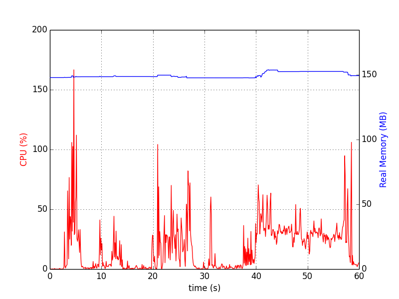
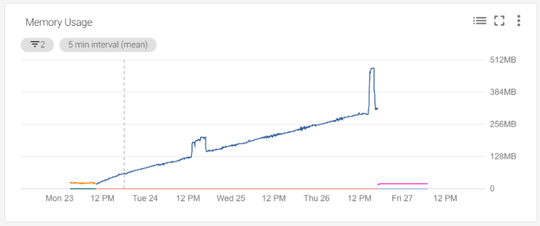
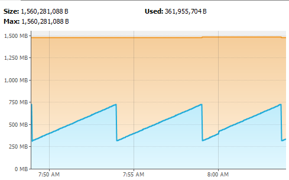
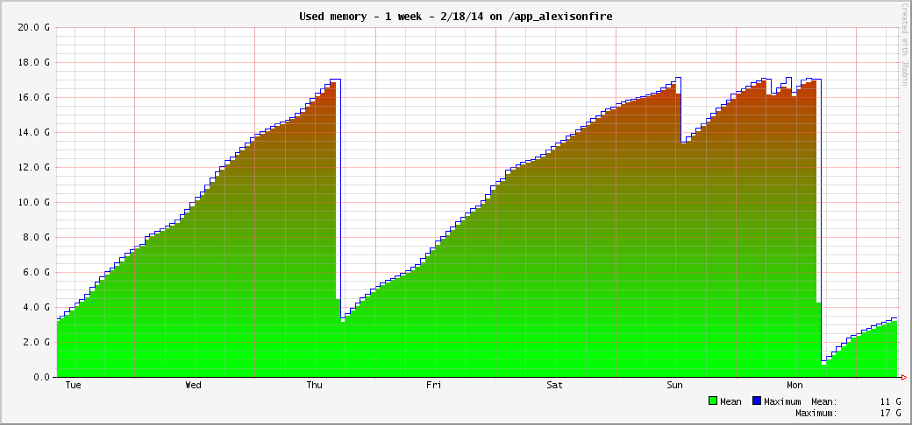
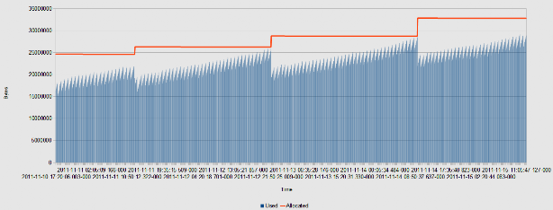
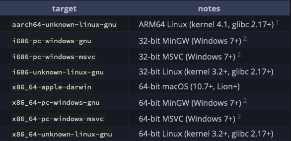

Krótkie wprowadzenie do Rusta
Programowanie 2.0
Kornel Koszela
kornel@koszela.me
KoNaR, 9.03.2023
Po co to komu?
Rodzaje języków
- Kompilowane i interpretowane
- Typowane statycznie i dynamicznie
- Nisko i wysokopoziomowe
- Funkcyjne i obiektowe
- Zarządzające pamięcią i niebezpieczne
Bezpieczeństwo pamięci
Bezpieczeństwo pamięci
Bezpieczeństwo pamięci
Bezpieczeństwo pamięci
Bezpieczeństwo pamięci
Rust

Rust
Nie jestem jak pozostałe języki
Rust
Borrow checker
Dwie zasady
Przykład
fn hold_my_vec(_: Vec) {}
fn main() {
let v = vec![2, 3, 5, 7, 11, 13, 17];
hold_my_vec(v);
println!("I got this element from the vector: {:?}", element);
}
Przykład
fn hold_my_vec(_: Vec) {}
fn main() {
let v = vec![2, 3, 5, 7, 11, 13, 17];
hold_my_vec(v);
let element = v.get(3);
println!("I got this element from the vector: {:?}", element);
}
Błąd
error[E0382]: borrow of moved value: `v`
--> src/main.rs:6:19
|
4 | let v = vec![2, 3, 5, 7, 11, 13, 17];
| - move occurs because `v` has type `std::vec::Vec`, which does not implement the `Copy` trait
5 | hold_my_vec(v);
| - value moved here
6 | let element = v.get(3);
| ^ value borrowed here after move Naprawione
fn hold_my_vec(_: &Vec) {}
fn main() {
let v = vec![2, 3, 5, 7, 11, 13, 17];
hold_my_vec(&v);
let element = v.get(3);
println!("I got this element from the vector: {:?}", element);
}
Zepsute
fn mut_my_vec(v: &Vec) {
vec.push(T::new())
}
fn main() {
let v = vec![2, 3, 5, 7, 11, 13, 17];
hold_my_vec(&v);
let element = v.get(3);
println!("I got this element from the vector: {:?}", element);
}
Enumy na sterydach
enum IpAddrKind {
V4,
V6,
}
fn main() {
let four = IpAddrKind::V4;
let six = IpAddrKind::V6;
route(IpAddrKind::V4);
route(IpAddrKind::V6);
}
fn route(ip_kind: IpAddrKind) {}
Enum jako rodzaj
fn main() {
enum IpAddrKind {
V4,
V6,
}
struct IpAddr {
kind: IpAddrKind,
address: String,
}
let home = IpAddr {
kind: IpAddrKind::V4,
address: String::from("127.0.0.1"),
};
let loopback = IpAddr {
kind: IpAddrKind::V6,
address: String::from("::1"),
};
}
Enum jako rodzaj, tylko lepiej
fn main() {
enum IpAddr {
V4(String),
V6(String),
}
let home = IpAddr::V4(String::from("127.0.0.1"));
let loopback = IpAddr::V6(String::from("::1"));
}
Enum jako rodzaj, tylko jeszcze lepiej
fn main() {
enum IpAddr {
V4(u8, u8, u8, u8),
V6(String),
}
let home = IpAddr::V4(127, 0, 0, 1);
let loopback = IpAddr::V6(String::from("::1"));
}
Enum jako rodzaj, tylko uniwersalny
enum Option {
None,
Some(T),
}
Match binding
#[derive(Debug)]
enum UsState {
Alabama,
Alaska,
// --snip--
}
enum Coin {
Penny,
Nickel,
Dime,
Quarter(UsState),
}
fn value_in_cents(coin: Coin) -> u8 {
match coin {
Coin::Penny => 1,
Coin::Nickel => 5,
Coin::Dime => 10,
Coin::Quarter(state) => {
println!("State quarter from {:?}!", state);
25
}
}
}
fn main() {
value_in_cents(Coin::Quarter(UsState::Alaska));
}
Obsługa wyjątków
Zawsze wiesz, że funkcja może się wysypać
#[derive(Debug)]
enum Version { Version1, Version2 }
fn parse_version(header: &[u8]) -> Result<Version, &'static str> {
match header.get(0) {
None => Err("invalid header length"),
Some(&1) => Ok(Version::Version1),
Some(&2) => Ok(Version::Version2),
Some(_) => Err("invalid version"),
}
}
let version = parse_version(&[1, 2, 3, 4]);
match version {
Ok(v) => println!("working with version: {v:?}"),
Err(e) => println!("error parsing header: {e:?}"),
}
Zawsze wiesz, że funkcja może się wysypać
#[derive(Debug)]
enum Version { Version1, Version2 }
fn parse_version(header: &[u8]) -> Result<Version, &'static str> {
match header.get(0) {
None => Err("invalid header length"),
Some(&1) => Ok(Version::Version1),
Some(&2) => Ok(Version::Version2),
Some(_) => Err("invalid version"),
}
}
let version = parse_version(&[1, 2, 3, 4])?;
Zawsze masz pewność, że coś zostanie zwrócone
fn divide(numerator: f64, denominator: f64) -> Option<f64> {
if denominator == 0.0 {
None
} else {
Some(numerator / denominator)
}
}
let result = divide(2.0, 3.0);
match result {
Some(x) => println!("Result: {x}"),
None => println!("Cannot divide by 0"),
}Zawsze masz pewność, że coś zostanie zwrócone
fn divide(numerator: f64, denominator: f64) -> Option<f64> {
if denominator == 0.0 {
None
} else {
Some(numerator / denominator)
}
}
let result = divide(2.0, 3.0).unwrap();
Klasy
struct Point(i32, i32, i32);
struct User {
active: bool,
username: String,
email: String,
location: Point,
sign_in_count: u64,
}
impl User {
fn get_city(&self) -> String {
// --snip--
}
}
Interfejsy
pub trait Summary {
fn summarize(&self) -> String;
}
pub struct NewsArticle {
pub headline: String,
pub location: String,
pub author: String,
pub content: String,
}
impl Summary for NewsArticle {
fn summarize(&self) -> String {
format!("{}, by {} ({})", self.headline, self.author, self.location)
}
}
pub struct Tweet {
pub username: String,
pub content: String,
pub reply: bool,
pub retweet: bool,
}
impl Summary for Tweet {
fn summarize(&self) -> String {
format!("{}: {}", self.username, self.content)
}
}
Interfejsy
pub fn notify(item: &impl Summary) {
println!("Breaking news! {}", item.summarize());
}Makro
#[derive(Debug)]
struct Rectangle {
width: u32,
height: u32,
}
fn main() {
let rect1 = Rectangle {
width: 30,
height: 50,
};
println!("rect1 is {:?}", rect1);
}
Makro
#echo "adiós" > spanish.in
fn main() {
let bytes = include_bytes!("spanish.in");
assert_eq!(bytes, b"adi\xc3\xb3s\n");
print!("{}", String::from_utf8_lossy(bytes));
}
#cargo run
#> adiósInne dobroci
Cargo
Wieloplatformowość
Tier1 to nie wszystko
Tier 2 też działa!W sam raz na płytkę!
Potężne std
Dokumentacja
Społeczność
Dziękuję za uwagę
kornel@koszela.mewprowadzenie-rust.koszela.me